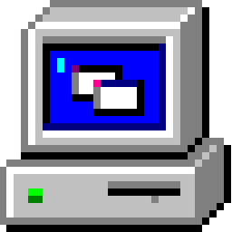

Webgen

Build websites like it's 2004. Create super simple web pages using Markdown. Also comes with templating via ejs. Build with node and typescript, it's perfect for github pages or simple resume sites!
Directories
docs
Markdown and HTML files go here. Use 01_ prefix for indexing and _ for spacing. If this convention is not followed, the build will break! Don't worry, we strip the numbers out on build. Single layer nesting is also supported!
📂 docs
L 01_welcome.md
L 📂 02_what_we_offer
L 01_products.md
L 02_services.md
L 03_about_us.html